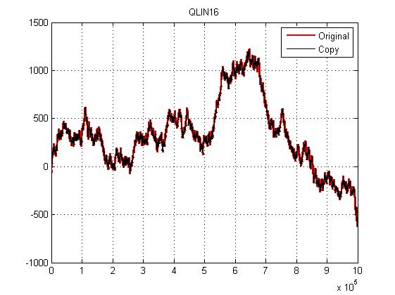
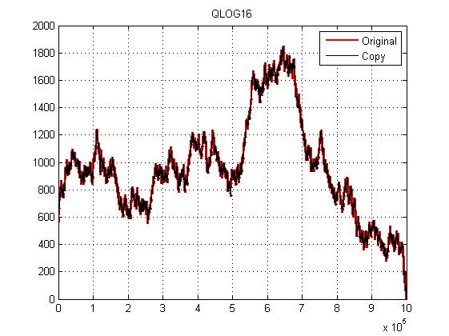

Contents
function sqlite_test_md5_and_packaging
clear all close all clc dummy = mksqlite('version mex'); fprintf( '\n\n' ); mksqlite( 'open', '' );
mksqlite Version 2.2 build: 109, ein MATLAB Interface zu SQLite
(c) 2008-2016 by Martin Kortmann <mail@kortmann.de>
Andreas Martin <andimartin@users.sourceforge.net>
basierend auf SQLite Version 3.10.2 - http://www.sqlite.org
mksqlite verwendet darueber hinaus:
- DEELX perl kompatible regex engine Version 1.3 (Sswater@gmail.com)
- BLOSC/LZ4 1.3.0-rc3.dev zur Datenkompression (Francesc Alted / Yann Collett)
- MD5 Message-Digest Algorithm (RFC 1321) Implementierung von Alexander Peslyak
Platform: PCWIN64, little endian
MD5 Test Suite
(ref: http://tools.ietf.org/html/rfc1321)
% Compare md5 hashing values with the reference values, listed from the above source clc fprintf( 'MD5 Test Suite:\n\n' ); q = mksqlite( 'select MD5(?) as MD5', 'a' ); fprintf( '"a":\n%s\n%s\n\n', lower( q.MD5 ), '0cc175b9c0f1b6a831c399e269772661' ); q = mksqlite( 'select MD5(?) as MD5', 'abc' ); fprintf( '"abc":\n%s\n%s\n\n', lower( q.MD5 ), '900150983cd24fb0d6963f7d28e17f72' ); q = mksqlite( 'select MD5(?) as MD5', 'message digest' ); fprintf( '"message digest":\n%s\n%s\n\n', lower( q.MD5 ), 'f96b697d7cb7938d525a2f31aaf161d0' ); q = mksqlite( 'select MD5(?) as MD5', 'abcdefghijklmnopqrstuvwxyz' ); fprintf( '"abcdefghijklmnopqrstuvwxyz":\n%s\n%s\n\n', lower( q.MD5 ), 'c3fcd3d76192e4007dfb496cca67e13b' ); q = mksqlite( 'select MD5(?) as MD5', 'ABCDEFGHIJKLMNOPQRSTUVWXYZabcdefghijklmnopqrstuvwxyz0123456789' ); fprintf( '"ABCDEFGHIJKLMNOPQRSTUVWXYZabcdefghijklmnopqrstuvwxyz0123456789":\n%s\n%s\n\n', lower( q.MD5 ), 'd174ab98d277d9f5a5611c2c9f419d9f' ); q = mksqlite( 'select MD5(?) as MD5', '12345678901234567890123456789012345678901234567890123456789012345678901234567890' ); fprintf( '"12345678901234567890123456789012345678901234567890123456789012345678901234567890":\n%s\n%s\n\n', lower( q.MD5 ), '57edf4a22be3c955ac49da2e2107b67a' );
MD5 Test Suite: "a": 0cc175b9c0f1b6a831c399e269772661 0cc175b9c0f1b6a831c399e269772661 "abc": 900150983cd24fb0d6963f7d28e17f72 900150983cd24fb0d6963f7d28e17f72 "message digest": f96b697d7cb7938d525a2f31aaf161d0 f96b697d7cb7938d525a2f31aaf161d0 "abcdefghijklmnopqrstuvwxyz": c3fcd3d76192e4007dfb496cca67e13b c3fcd3d76192e4007dfb496cca67e13b "ABCDEFGHIJKLMNOPQRSTUVWXYZabcdefghijklmnopqrstuvwxyz0123456789": d174ab98d277d9f5a5611c2c9f419d9f d174ab98d277d9f5a5611c2c9f419d9f "12345678901234567890123456789012345678901234567890123456789012345678901234567890": 57edf4a22be3c955ac49da2e2107b67a 57edf4a22be3c955ac49da2e2107b67a
Packaging time for random numbers
fprintf( 'BLOSC test suite:\n\n' ); compressor = 'blosclz'; % blosclz, lz4, lz4hc, qlin16, qlog16 % Using typed BLOBs with compression feature mksqlite( 'typedBLOBs', 2 ); mksqlite( 'compression_check', 1 );
BLOSC test suite:
1.000.000 random numbers
data = randn( 1e6, 1 );
for level = 9:-1:0
% set compressor and compression level
mksqlite( 'compression', compressor, level );
% measuring
q = mksqlite( ['SELECT BDCPackTime(?) AS t_pack, ', ...
' BDCUnpackTime(?) AS t_unpack, ', ...
' BDCRatio(?) AS ratio, ', ...
' ? as data'], ...
data, data, data, data );
% display results
fprintf( 'Level %d: pack(%gs), unpack(%gs), ratio(%g%%)\n', ...
level, q.t_pack, q.t_unpack, q.ratio*100 );
end
Level 9: pack(0.0442379s), unpack(0.00750921s), ratio(96.6226%) Level 8: pack(0.0410647s), unpack(0.00751595s), ratio(96.5836%) Level 7: pack(0.0385499s), unpack(0.00749894s), ratio(96.5836%) Level 6: pack(0.0367404s), unpack(0.0074051s), ratio(96.6209%) Level 5: pack(0s), unpack(0s), ratio(100%) Level 4: pack(0s), unpack(0s), ratio(100%) Level 3: pack(0s), unpack(0s), ratio(100%) Level 2: pack(0s), unpack(0s), ratio(100%) Level 1: pack(0s), unpack(0s), ratio(100%) Level 0: pack(0s), unpack(0s), ratio(100%)
Same random numbers, cumulated
data = cumsum( data );
for level = 9:-1:0
% set compressor and compression level
mksqlite( 'compression', compressor, level );
% measuring
q = mksqlite( ['SELECT BDCPackTime(?) AS t_pack, ', ...
' BDCUnpackTime(?) AS t_unpack, ', ...
' BDCRatio(?) AS ratio, ', ...
' ? as data'], ...
data, data, data, data );
% display results
fprintf( 'Level %d: pack(%gs), unpack(%gs), ratio(%g%%)\n', ...
level, q.t_pack, q.t_unpack, q.ratio*100 );
end
Level 9: pack(0.0337529s), unpack(0.00458148s), ratio(76.9435%) Level 8: pack(0.0305492s), unpack(0.0042495s), ratio(76.9101%) Level 7: pack(0.0281922s), unpack(0.0042275s), ratio(76.8893%) Level 6: pack(0.0266616s), unpack(0.00413688s), ratio(76.9302%) Level 5: pack(0.0225097s), unpack(0.00401459s), ratio(77.0878%) Level 4: pack(0.0175458s), unpack(0.00388848s), ratio(77.207%) Level 3: pack(0.00977619s), unpack(0.00339285s), ratio(79.0156%) Level 2: pack(0.00843624s), unpack(0.00335209s), ratio(79.2738%) Level 1: pack(0.00903598s), unpack(0.00309313s), ratio(82.5725%) Level 0: pack(0s), unpack(0s), ratio(100%)
Same random numbers, half constant 0
data( 1:500000 ) = 0;
for level = 9:-1:0
% set compressor and compression level
mksqlite( 'compression', compressor, level );
% measuring
q = mksqlite( ['SELECT BDCPackTime(?) AS t_pack, ', ...
' BDCUnpackTime(?) AS t_unpack, ', ...
' BDCRatio(?) AS ratio, ', ...
' ? as data'], ...
data, data, data, data );
% display results
fprintf( 'Level %d: pack(%gs), unpack(%gs), ratio(%g%%)\n', ...
level, q.t_pack, q.t_unpack, q.ratio*100 );
end
Level 9: pack(0.0177004s), unpack(0.00344564s), ratio(38.1788%) Level 8: pack(0.0162771s), unpack(0.00313126s), ratio(38.1433%) Level 7: pack(0.015085s), unpack(0.00318023s), ratio(38.1431%) Level 6: pack(0.0142715s), unpack(0.0031163s), ratio(38.2187%) Level 5: pack(0.0121614s), unpack(0.00305823s), ratio(38.3733%) Level 4: pack(0.00967824s), unpack(0.00307436s), ratio(38.3733%) Level 3: pack(0.00582964s), unpack(0.0029984s), ratio(38.6284%) Level 2: pack(0.00524222s), unpack(0.00298785s), ratio(38.65%) Level 1: pack(0.00559473s), unpack(0.00286819s), ratio(40.1428%) Level 0: pack(0s), unpack(0s), ratio(100%)
QLIN16/QLOG16 test suite
fprintf( '\nLossy compression "QLIN16":\n(Unique resolution over entire value range)\n' ); level = 1; % Always 1, ratio is always constant 1:4 data = cumsum( randn( 1e6, 1 ) );
Lossy compression "QLIN16": (Unique resolution over entire value range)
Measuring QLIN16
% set compressor and compression level mksqlite( 'compression', 'QLIN16', level ); q = mksqlite( ['SELECT BDCPackTime(?) AS t_pack, ', ... ' BDCUnpackTime(?) AS t_unpack, ', ... ' BDCRatio(?) AS ratio, ', ... ' ? as data'], ... data, data, data, data );
Display results
fprintf( 'Level %d: pack(%gs), unpack(%gs), ratio(%g%%)\n', ... level, q.t_pack, q.t_unpack, q.ratio*100 ); figure plot( data, 'r-', 'linewidth', 2, 'displayname', 'Original' ), hold all plot( q.data, 'k-', 'displayname', 'Copy' ) grid legend( 'show' ) title( 'QLIN16' ); fprintf( '\nLossy compression "QLOG16":\n(Lesser resolution for bigger values)\n' ); level = 1; % Always 1, ratio is always constant 1:4 data = data - min(data); % Only positive numbers allowed (and 0, NaN, +Inf und -Inf)
Level 1: pack(0.00930696s), unpack(0.00242359s), ratio(25.0001%) Lossy compression "QLOG16": (Lesser resolution for bigger values)
Measuring QLOG16
% set compressor and compression level mksqlite( 'compression', 'QLOG16', level ); q = mksqlite( ['SELECT BDCPackTime(?) AS t_pack, ', ... ' BDCUnpackTime(?) AS t_unpack, ', ... ' BDCRatio(?) AS ratio, ', ... ' ? as data'], ... data, data, data, data );
Display results
fprintf( 'Level %d: pack(%gs), unpack(%gs), ratio(%g%%)\n', ... level, q.t_pack, q.t_unpack, q.ratio*100 ); figure plot( data, 'r-', 'linewidth', 2, 'displayname', 'Original' ), hold all plot( q.data, 'k-', 'displayname', 'Copy' ) grid legend( 'show' ) title( 'QLOG16' );
Level 1: pack(0.0200932s), unpack(0.0145116s), ratio(25.0001%)
Packaging time for screenshot data
% Screenshot (figure) as (RGB-matrix) fprintf( '\nScreenshot data:\n' ); h = figure; set( h, 'units', 'normalized', 'position', [0.5,0.5,0.2,0.2] ); x = linspace(0,2*pi,20); plot( x, sin(x), 'r-', 'linewidth', 2 ); legend on F = getframe(h); delete(h); data = F.cdata;
Screenshot data:
Measuring
level = 9;
mksqlite( 'compression', compressor, level );
q = mksqlite( ['SELECT BDCPackTime(?) AS t_pack, ', ...
' BDCUnpackTime(?) AS t_unpack, ', ...
' BDCRatio(?) AS ratio'], ...
data, data, data );
Display results
fprintf( 'Level %d: pack(%gs), unpack(%gs), ratio(%g%%)\n', ... level, q.t_pack, q.t_unpack, q.ratio*100 );
Level 9: pack(0.00014165s), unpack(0.0001264s), ratio(3.30078%)
Close database
mksqlite( 'close' );